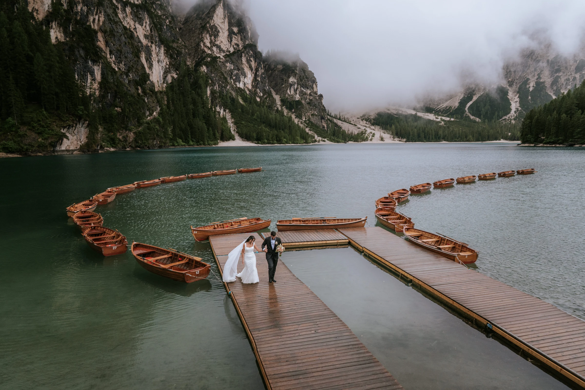
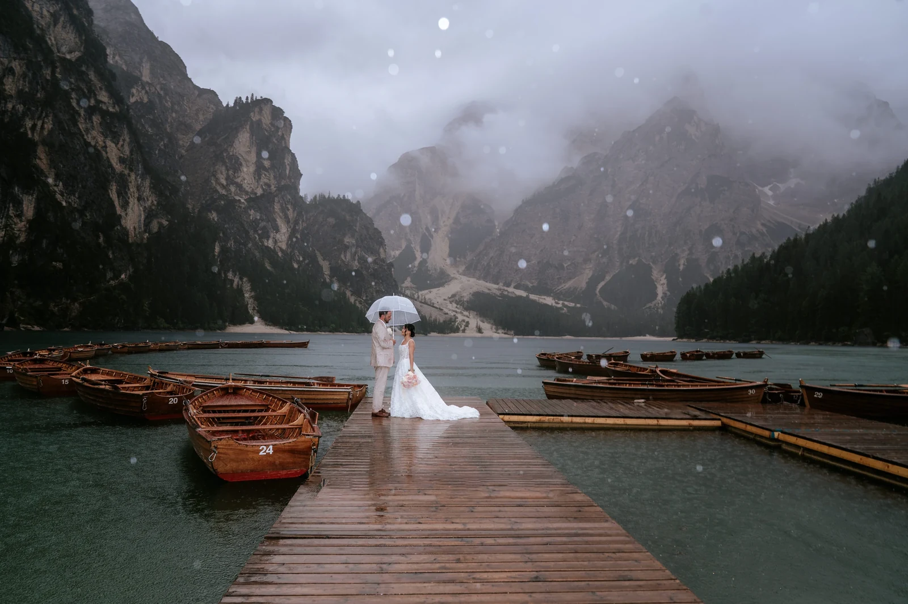

Curiosi di progettare un elopement che unisca avventura e romanticismo nelle splendide Dolomiti? La nostra specialità è creare elopement di montagna indimenticabili, su misura per la vostra visione.
Iniziamo aiutandovi a scegliere la location perfetta — considerando accessibilità, paesaggio e atmosfera desiderata. Che sogniate di scambiarvi le promesse su una vetta appartata o in riva a un lago alpino, ogni dettaglio ruota attorno a voi due.
Quando il giorno richiede più mani, lavoriamo con una cerchia fidata: pianificazione sul posto di Dolomites Wedding Planner, fotografia di Blitzkneisser.

Vetta, lago, prato o cresta — scegliamo lo scenario in base alla vostra visione, alla stagione e a quanto volete camminare.
Un programma rilassato, la luce migliore, un piano flessibile per il meteo e tutta la logistica — trasferimenti, fiori, trucco e acconciatura.
Promesse personali, un celebrante o una cerimonia civile opzionale, e una fotografia che cattura tutto esattamente come si è sentito.
Un punto di partenza sereno per chi pianifica un elopement nelle Dolomiti o un matrimonio intenzionale in montagna — e vuole capire meglio da dove cominciare.


La nostra planner nelle Dolomiti — logistica, permessi, alloggio e ogni dettaglio gestito sul posto, così potete semplicemente esserci. Con anni di esperienza e cresciuta nel cuore delle Dolomiti, conosce ogni pietra — il che crea un’atmosfera splendidamente rilassata.
Dolomites Wedding Planner →Fondatore e fotografo principale — tirolese, a casa tra Innsbruck e le Dolomiti. Premiato (Way Up North Awards 2024), pubblicato su Rangefinder. Andreas accompagna ogni coppia verso la luce e racconta la giornata come si sente davvero.
Blitzkneisser →Usiamo cookie per statistiche anonime (Google Analytics tramite Google Tag Manager) per migliorare il sito. L'analisi parte solo con il tuo consenso. Privacy